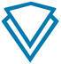
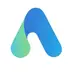
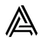
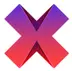
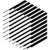
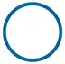

Nasdacoin(NSD) Nasdacoin是一个去中心化的加密虚拟货币，具有开源、点对点等特点，使用POW/POS混合格式的scrypt算法开发，使具有创业并对金融和技术市场充满热情的人们能够安全和分散的货币保存...
 能量链-UENC(UENC) UENC（Universal Energy Chain，能量链）是一个以跨链研究为技术方向的可扩展的区块链基础公链系统，通过在区块链底层技术和架构上进行优化和创新，支持不同区块链网络之间的价值...
 ALLIVE(ALV) ALLIVE是基于区块链技术的大健康生态智能区块链网络，在ALLIVE网络里，用户可以全面掌控自己的健康数据，并由人工智能医生进行个性化健康管理，进而满足其在医疗健康方面的全流程需求
 AUV AUV是区块链时代极具革命性、创新性、颠覆性的去中心化、去平台化、去中介化的点对点消费网络基础设施，致力于赋能全球吃住行游购娱综合性消费产业,在公链底层架构、Hyperledger F...
 Axe(AXE) AXE是DASH的升级版，和DASH一样基于X11算法，AXE网络基础混合了PoW和PoSe系统，去掉了DASH的Alert key和Spork key后门，降低了superblock的参加门槛（仅有达士的千分之一），让AXE...
RCN RCN（Ripio Credit Network）是基于区块链智能合约技术的协议，它有个很宏大的目标，就是通过RCN协议来连接世界上任何两个信用借贷人（借款人和放贷人），不管你是委内瑞拉、阿根...
阿姨币-Aeternity(AE) Aeternity由德裔计算机科学家“以太坊教父”Yanislav Malahov与前Augur核心开发者Zack Hess前Synereo核心开发者Jack Pettersson于2016年发起，聚集诸多颠覆性创新于一身，旨在重树当...
All Sports Coin(SOC) All Sports公有链平台以SOC（All Sports Coin）为媒介，利用区块链技术，结合体育产业和体育生态链上的应用和商业场景，基于智慧合约和Token系统，为开发者提供的一整套方便快捷的...
 Republic Protocol(REN) Republic Protocol（REN）是一个BTC/ETH，BTC/ERC20和ETH/ERC20之间大量加密资产在分布式暗池交易的协议，是目前所知唯一拥有此类分布式加密资产暗池交易技术的区块链企业
双子星美元-Gemini Dollar(GUSD) 2018年9月10日，纽约金融服务部（NYDFS）同时批准了两种基于以太坊发行的稳定币，分别是Gemini Dollar和Paxos Standard
 字节雪球-Obyte(GBYTE) Obyte(字节雪球) 是一个采用DAG技术存储和传输价值的去中心化系统，允许任意数据的防篡改存储，包括可转移的价值数据，例如货币，产权，债务，股份等，并且交易越是拥挤速度反而越快
注意力币-Basic Attention Token(BAT) 分析BAT（Basic Attention Token）是Javascript创始人，Mozilla和Firefox浏览器联合创始人Brendan Eich创办的一个用于在广告商和用户之间进行流通的数字资产，用于解决浏览器中的...
未来币-Nxt(NXT) 未来币（译名：奈克斯特币）被认为是第二代密码币，基于全新的代码编写，改进了比特币的很多特性，如以全新的100%股权证明（POS）设计代替工作量证明（POW），避免了一代密码币的...


是一个基于区块链技术去颠覆传统金融行业的公有链")